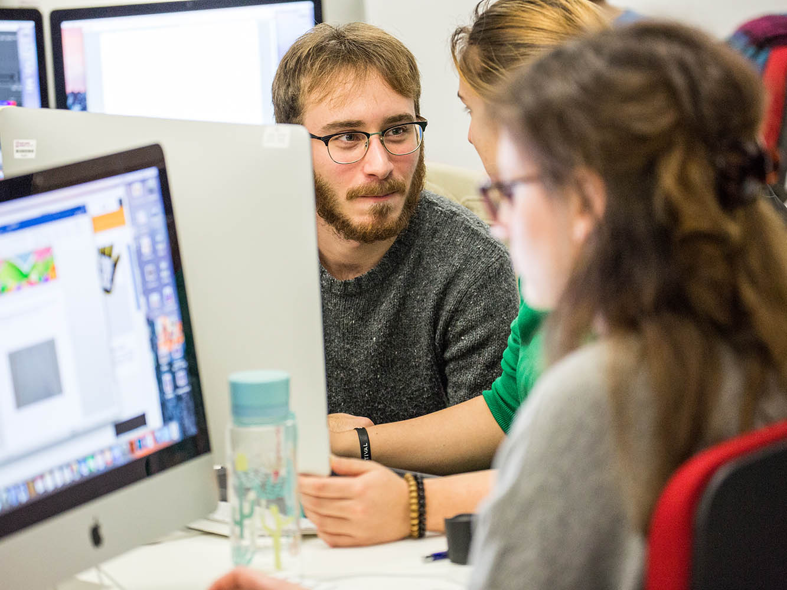
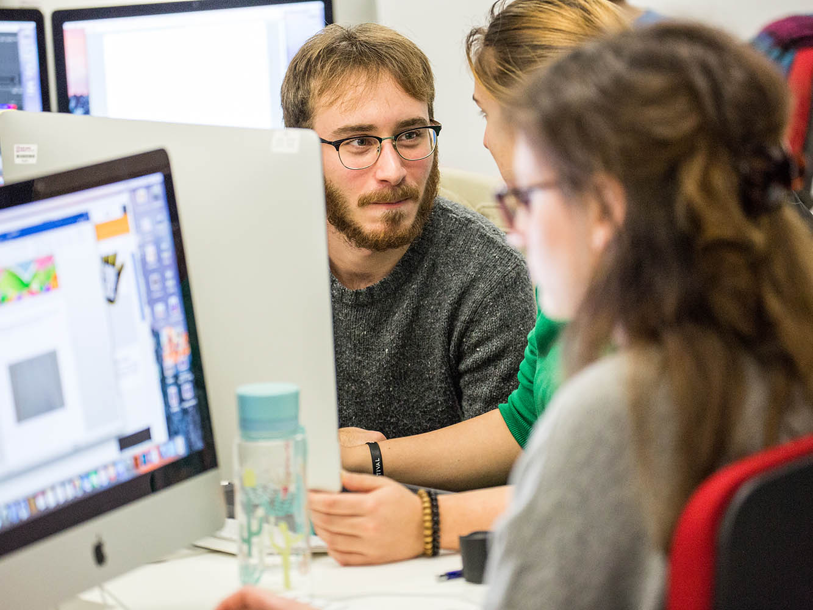

School of Computing Science & Digital Media
About the school
Our courses develop skills and expertise for a wide-range of computing technologies and target applications.
From our state-of-the-art, purpose-built environment you will study forward-thinking professional practice, and learn the skills required to be at the forefront of digital and creative economies. Using emerging technologies, you will learn practical and creative problem-solving skills, and apply these to real challenges which are or will be faced by industry. You will also gain valuable technical, personal and professional skills, to compliment you career-enhancing qualification.
FUTURE-READY GRADUATES
In 2016 Scotland IS (the organisation representing the IT sector in Scotland) estimated that the country would need at least 11,000 extra Information and Communications Technology (ICT) workers each year for the next five years – whilst there are only 2,000 ICT graduates per year from Scottish universities. Our range of courses address the skills-gap challenge facing the industry, and reflects the diversity of the modern computing landscape.
We can support you to form your own venture, and develop innovative skills to expand your horizons beyond the taught curriculum. Recent students have launched their own businesses, undertaken commercial projects in parallel with their studies, published research papers at international conferences, and won national competitions. Our school has an excellent reputation for its innovative and practical approaches to teaching and learning. For generations it has produced qualified professionals across a broad spectrum of technical careers with graduates in high profile, international roles.